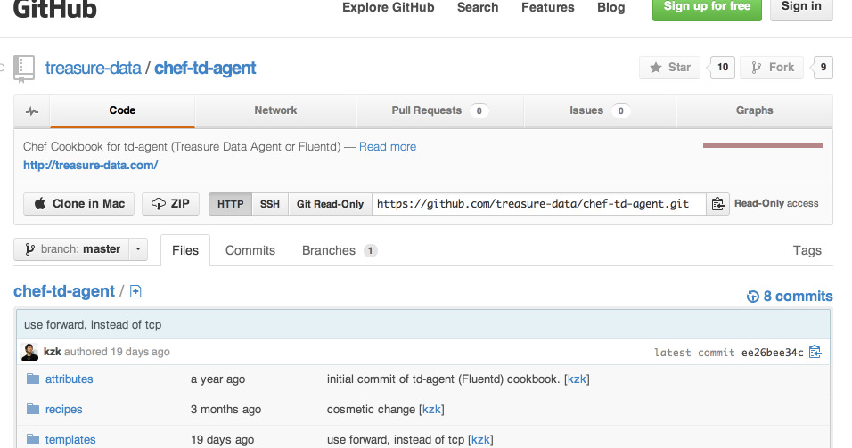
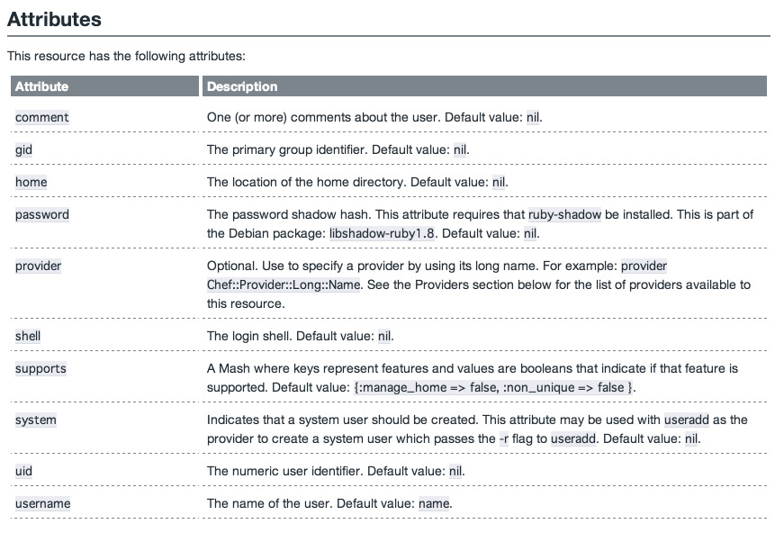
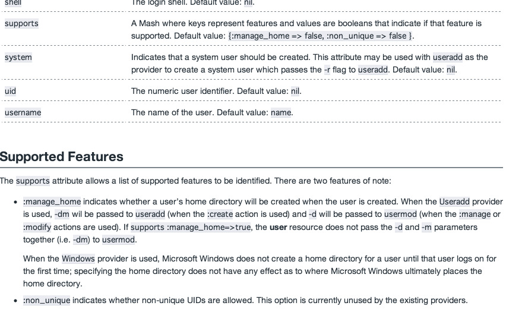
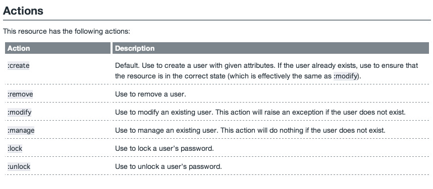
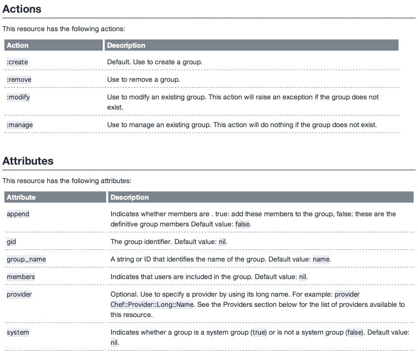

Vagrant と Chef でユーザー作成の自動化をしてみる
この記事は書かれてから1年以上が経過しており、最新の情報とは異なる可能性があります
だんだんと Chef いじりが楽しくなってきた girigiribauer です、こんにちは。
この前**『入門 Chef Solo』**というKindle本（電子書籍）を購入して、休憩時などに少しずつ読み進めていたのですが、 ようやくざっと一通り目を通すことができました。
今回以降、この辺も見ながらいろいろ試してみようと思います。
レシピを書くとどんなことが設定できるの？
前回までで、Vagrant と Chef を連携させて、 超シンプルなレシピを書いてみたわけですが、 今回はレシピを書くことで他にどんなことが出来ちゃうのかを、もう少し試してみようと思います！
『入門 Chef Solo』に、この Cookbook はユーザーの設定やらグループの設定やらが一通り載っていて、 最初に全体像を見るのにいいよ！と書かれていたので、まずはこちらの https://github.com/treasure-data/chef-td-agent を参考にしてみます。

ログデータの収集に使うツールと、それ専用のユーザーなりを設定してくれる Cookbook のようですね。
recipes/default.rb を早速見てみます。
#
# Cookbook Name:: td-agent
# Recipe:: default
#
# Copyright 2011, Treasure Data, Inc.
#
group 'td-agent' do
group_name 'td-agent'
gid 403
action [:create]
end
user 'td-agent' do
comment 'td-agent'
uid 403
group 'td-agent'
home '/var/run/td-agent'
shell '/bin/false'
password nil
supports :manage_home => true
action [:create, :manage]
end
directory '/etc/td-agent/' do
owner 'td-agent'
group 'td-agent'
mode '0755'
action :create
end
（以下略）
中身は Ruby のコードとはいえ、見ると何をやっているのかは何となく分かりそうな感じです。
- 一番上のブロックで ‘td-agent’ という名前のグループを作る
- gid（Linux などでグループに割り振られるID）は 403 にする
続けて、
- ‘td-agent’ という名前のユーザーを作る
- uid（Linux などでユーザーに割り振られるID）は 403 にする
- ホームディレクトリは ‘/var/run/td-agent’ にする
- シェルは指定せず、パスワードもなし
supports :manage_home => trueが何を意味しているのかは後で調べます
最後に、
- ‘/etc/td-agent/’ という名前のディレクトリを作る
- 所有者は、’td-agent’、グループは ‘td-agent’ になるようにする
- 権限は ‘0755’（つまり所有者が読み書き実行、同一グループが読み＆実行、それ以外のユーザーも読み＆実行）
というレシピのようです。
これ、Linux とかに詳しくないと出来ないの？
個人的には逆だと思っていて、 設定すべき項目が明らかになっている分、どういうポイントを調べればいいのかが明確になっています。 そもそも知らなきゃ調べようもなかった設定に対して、ググるチャンスをもらえたと思って、 分からないところはどんどんググるべきだなーと思います。
例えば、シェルの指定が ‘/bin/false’ になっている箇所なんかは、 適当に linux /bin/false とかでググれば、ログインできないユーザーを作る方法であることが分かるので、 このレシピでは、ログインできないユーザーを作ろうとしていることが分かり、 ググったついでに実際の設定方法なども分かって勉強にもなりますね。
ってことで、分からないところはどんどんググって覚えていこうと思います。
ユーザーの設定項目について
これは公式を見た方が良さそうなので見てみます。 http://docs.opscode.com/resource_user.html
設定項目は、大きく分けて Actions と Attributes の2種類あるようなので、まず先に Attributes の方を見てみます。

あれ、読んでも何のことだかさっぱりだなーと思ったら、そのすぐ下に詳しく説明載ってました。

要するに、 key, value の対になるものを設定できて、設定できるのが :manage_home, :non_unique の2つ、 :manage_home はホームディレクトリの作成有無、:non_unique は UID の重複を許すかどうかのようです。
なるほどなるほどー。
お次は、Actions の方を見てみます。

action [:create, :manage] とあるので、該当ユーザーがなければユーザーを作り、 Attributes の通りに設定を合わせてくれるようです。 読む限りだと、create だけでも既存ユーザーに対しては設定を合わせてくれるみたいなんですが、 manage も必要なんでしょうかね？後で試してみましょうか。
グループの設定項目について
グループはこちらですね。http://docs.opscode.com/resource_group.html
こちらも Actions, Attributes を引用します。

レシピに書かれた内容だけだと、単に create で作って GID を設定しているだけですね。
ユーザーとグループの関係でちょっと気になるところが出て来たのですが、 ユーザーは複数のグループに属することが出来るはずなので、ユーザーの設定項目の group で、配列として指定してやればいいんでしょうか？
ユーザーとグループのレシピを書く！
この前 2台構成にしてましたが、一旦1台に戻してレシピを書きましょう。（インストールとか時間かかるので）
group 'samplegroup' do
group_name 'samplegroup'
members ['alice', 'bob', 'carol']
action [:create]
end
user 'alice' do
shell '/bin/zsh'
password 'alice'
supports :manage_home => true, :non_unique => false
action [:create]
end
user 'bob' do
shell '/bin/zsh'
password 'bob'
supports :manage_home => true, :non_unique => false
action [:create]
end
user 'carol' do
shell '/bin/zsh'
password 'carol'
supports :manage_home => true, :non_unique => false
action [:create]
end
ささっと書いて試してみます！
vagrant up!!
$ vagrant up
Expected process to exit with [0], but received '3'
---- Begin output of gpasswd -M alice,bob,carol samplegroup ----
STDOUT:
STDERR: gpasswd: user 'alice' does not exist
gpasswd: user 'bob' does not exist
gpasswd: user 'carol' does not exist
---- End output of gpasswd -M alice,bob,carol samplegroup ----
Ran gpasswd -M alice,bob,carol samplegroup returned 3[0m
なんかエラー出てますね。グループを作るときにそのユーザーがないと言われているようですね。
ちょっとユーザーとグループの作成の順番を変えてやってみます。
[vmclient1] Running provisioner: chef_solo...
Generating chef JSON and uploading...
Running chef-solo...
[2013-05-10T21:02:02+00:00] INFO: *** Chef 11.4.0 ***
[2013-05-10T21:02:02+00:00] INFO: Setting the run_list to "recipe[vmclient1]" from JSON
[2013-05-10T21:02:02+00:00] INFO: Run List is [recipe[vmclient1]]
[2013-05-10T21:02:02+00:00] INFO: Run List expands to [vmclient1]
[2013-05-10T21:02:02+00:00] INFO: Starting Chef Run for vmclient1
[2013-05-10T21:02:02+00:00] INFO: Running start handlers
[2013-05-10T21:02:02+00:00] INFO: Start handlers complete.
[2013-05-10T21:02:02+00:00] INFO: Processing user[alice] action create (vmclient1::default line 3)
[2013-05-10T21:02:02+00:00] INFO: user[alice] created
[2013-05-10T21:02:02+00:00] INFO: Processing user[bob] action create (vmclient1::default line 10)
[2013-05-10T21:02:02+00:00] INFO: user[bob] created
[2013-05-10T21:02:02+00:00] INFO: Processing user[carol] action create (vmclient1::default line 17)
[2013-05-10T21:02:02+00:00] INFO: user[carol] created
[2013-05-10T21:02:02+00:00] INFO: Processing group[samplegroup] action create (vmclient1::default line 24)
[2013-05-10T21:02:02+00:00] INFO: group[samplegroup] altered
[2013-05-10T21:02:02+00:00] INFO: Chef Run complete in 0.145912047 seconds
[2013-05-10T21:02:02+00:00] INFO: Running report handlers
[2013-05-10T21:02:02+00:00] INFO: Report handlers complete
お、user[alice] created と表示されているので、今度は上手く行ったようですかね？
早速 vagrant ssh で中を確認してみます。
$ vagrant ssh vmclient1
Welcome to your Vagrant-built virtual machine.
[vagrant@vmclient1 ~]$
んで、それぞれのユーザーに成り代わります。
[vagrant@vmclient1 ~]$ su alice
パスワード: (ここで alice っていれた)
su: パスワードが違います
[vagrant@vmclient1 ~]$ su bob
パスワード: (ここで bob っていれた)
su: パスワードが違います
[vagrant@vmclient1 ~]$ su carol
パスワード: (ここで carol っていれた)
su: パスワードが違います
[vagrant@vmclient1 ~]$
むむむ・・・。パスワードが有効でない？？
ついでに /etc/group もみてみます。
samplegroup❌503:alice,bob,carol
グループを新規で作って、そこにユーザーを追加するのは出来ているようです。
ユーザーの作成の見直し
どうやらパスワードが上手く登録できてないようなので、その辺りを見直してみます。
さっきのユーザーの Attributes を見直してみると、どうやらパスワードはハッシュ化されたものをここに入れる必要があるみたいです。
# Cookbook ユーザーとグループのテスト
user 'alice' do
shell '/bin/zsh'
password 'megckhCt3LluU'
supports :manage_home => true, :non_unique => false
action [:create]
end
user 'bob' do
shell '/bin/zsh'
password '8Q14e7OP5wroc'
supports :manage_home => true, :non_unique => false
action [:create]
end
user 'carol' do
shell '/bin/zsh'
password 'fcv1NMIRSDH/Y'
supports :manage_home => true, :non_unique => false
action [:create]
end
group 'samplegroup' do
group_name 'samplegroup'
members ['alice', 'bob', 'carol']
action [:create]
end
一応まだテストなので、 openssl passwd でハッシュ化してみましたが、 この方法で安全かどうかまでは保証できないので、実戦配備するタイミングで同様の機会があれば、この辺見直したいと思います。 （＆安全な方法知ってたら教えてください・・・）
さて、vagrant reload で再起動です。
[2013-05-11T15:54:57+00:00] INFO: *** Chef 11.4.0 ***
[2013-05-11T15:54:58+00:00] INFO: Setting the run_list to "recipe[vmclient1]" from JSON
[2013-05-11T15:54:58+00:00] INFO: Run List is [recipe[vmclient1]]
[2013-05-11T15:54:58+00:00] INFO: Run List expands to [vmclient1]
[2013-05-11T15:54:58+00:00] INFO: Starting Chef Run for vmclient1
[2013-05-11T15:54:58+00:00] INFO: Running start handlers
[2013-05-11T15:54:58+00:00] INFO: Start handlers complete.
[2013-05-11T15:54:58+00:00] INFO: Processing user[alice] action create (vmclient1::default line 3)
[2013-05-11T15:54:58+00:00] INFO: user[alice] altered
[2013-05-11T15:54:58+00:00] INFO: Processing user[bob] action create (vmclient1::default line 10)
[2013-05-11T15:54:58+00:00] INFO: user[bob] altered
[2013-05-11T15:54:58+00:00] INFO: Processing user[carol] action create (vmclient1::default line 17)
[2013-05-11T15:54:58+00:00] INFO: user[carol] altered
[2013-05-11T15:54:58+00:00] INFO: Processing group[samplegroup] action create (vmclient1::default line 24)
[2013-05-11T15:54:58+00:00] INFO: Chef Run complete in 0.099637811 seconds
[2013-05-11T15:54:58+00:00] INFO: Running report handlers
[2013-05-11T15:54:58+00:00] INFO: Report handlers complete
さっきと違って、created じゃなくて altered になってますね。置き換えてくれたっぽいです。 （ちなみに sandbox は使ってないので、さっきの状態から再起動しただけです）
さて、ログインして見てみます。
[vagrant@vmclient1 ~]$ su alice
パスワード: (ここで alice っていれた)
su: /bin/zsh: そのようなファイルやディレクトリはありません
[vagrant@vmclient1 ~]$ which zsh
/usr/bin/which: no zsh in (/usr/local/bin:/bin:/usr/bin:/usr/local/sbin:/usr/sbin:/sbin:/home/vagrant/bin)
[vagrant@vmclient1 ~]$ which bash
/bin/bash
おおーっと、zsh がないですねww 寝ぼけてましたゴメンナサイゴメンナサイ。
シェルの設定は後回しにして、とりあえず存在してる bash に設定変更して、 もう一度 vagrant relaod, vagrant ssh vmclient1 でログインして見てみます。
[vagrant@vmclient1 ~]$ su - alice
パスワード: (ここで alice っていれた)
[alice@vmclient1 ~]$ pwd
/home/alice
きたーーーーー！！！
[alice@vmclient1 ~]$ su - bob
Password: (ここで bob っていれた)
[bob@vmclient1 ~]$ pwd
/home/bob
[bob@vmclient1 ~]$ su - carol
Password: (ここで carol っていれた)
[carol@vmclient1 ~]$ pwd
/home/carol
きたきたきたーー！！ ユーザー3人分出来ておりました！！
ユーザーの変更があったときどうなるの？
さらに、ユーザーが居なくなったらどうなるのか気になったので、試しに Cookbook の中から carol を消して実行してみます。
[vagrant@vmclient1 ~]$ su - carol
パスワード:
[carol@vmclient1 ~]$ pwd
/home/carol
うーむなるほど、Cookbook の記述を削除するだけでは、ユーザーは無くならないようですね。ここまでは予想通りです。
さて、さっきの Chef の公式の user のページ中に、:remove というアクションがあったので、 おそらく :create のところを、:remove にしてやれば、ユーザーが削除された状態に Chef が合わせてくれることでしょう。
やってみます。
# Cookbook ユーザーとグループのテスト
user 'alice' do
shell '/bin/bash'
password 'megckhCt3LluU'
supports :manage_home => true, :non_unique => false
action [:create]
end
user 'bob' do
shell '/bin/bash'
password '8Q14e7OP5wroc'
supports :manage_home => true, :non_unique => false
action [:create]
end
user 'carol' do
shell '/bin/bash'
password 'fcv1NMIRSDH/Y'
supports :manage_home => true, :non_unique => false
action [:remove]
end
group 'samplegroup' do
group_name 'samplegroup'
members ['alice', 'bob']
action [:create]
end
設定などは一旦そのままで、action のところだけ :remove に変更してみました。
さて、どうなるでしょう。
[2013-05-11T16:21:53+00:00] INFO: Processing user[carol] action remove (vmclient1::default line 17)
[2013-05-11T16:21:53+00:00] INFO: user[carol] removed
おお？ Chef のログからは削除がされているように見えますね。
[vagrant@vmclient1 ~]$ su - carol
su: carol というユーザは存在しません
carol さん消えたーーー！
なるほどなるほど、ということは Chef の Cookbook 内で、削除されたユーザーも含めて、こちらにまとめておいた方がいいんでしょうかね。
まとめ
ちょっと長くなってきちゃったので、一旦ここでまとめたいと思います。
- Cookbook に記述することで、ユーザー作成、グループ作成が可能
- パスワードはハッシュ化されたものを Cookbook 内に記述しておく
- ユーザーの削除も可能
まだまだユーザー周りについては、試したいこと色々ありますよね。鍵認証にするとか、sudo 出来るようにするとか、この辺も追々試してみようと思います！
参考URL
この記事は書かれてから1年以上が経過しており、最新の情報とは異なる可能性があります